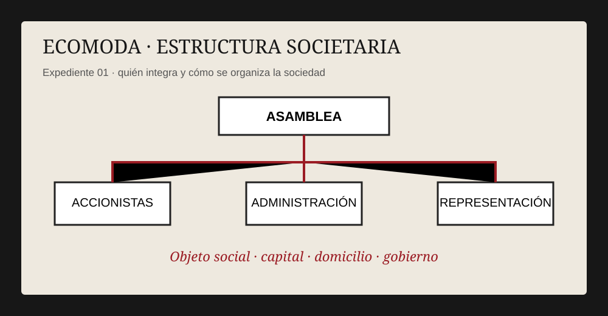
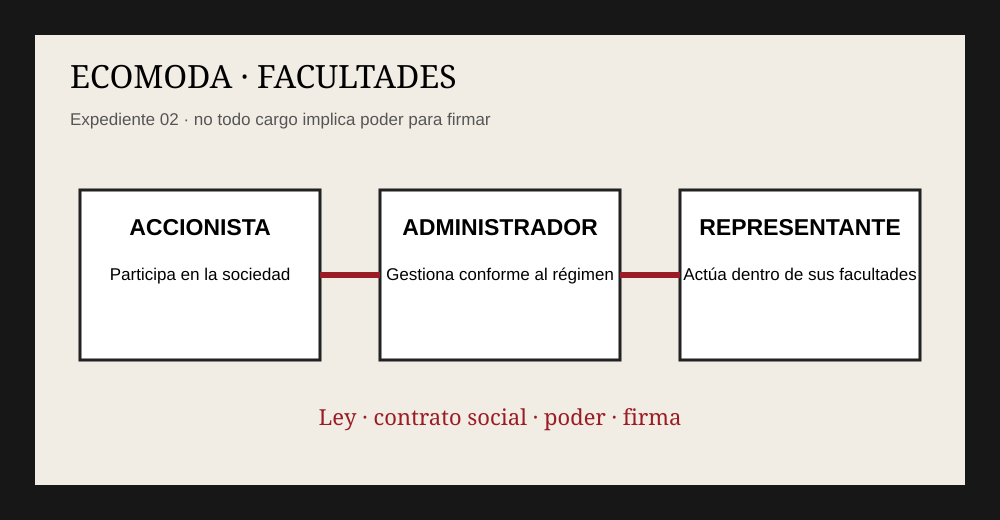
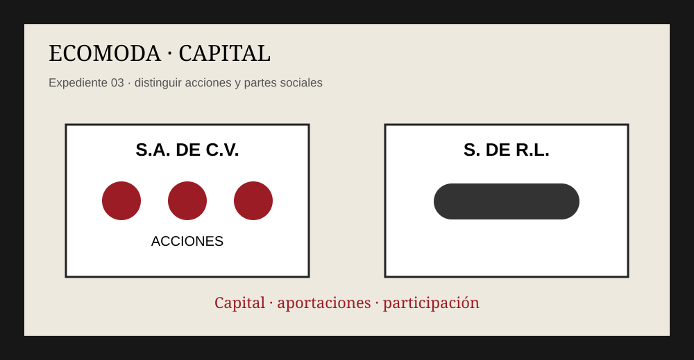
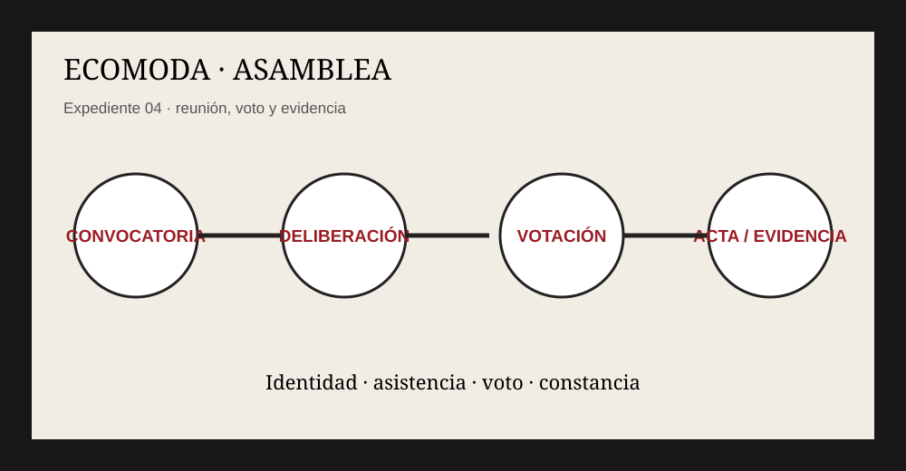
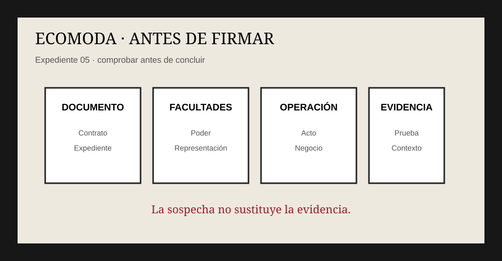
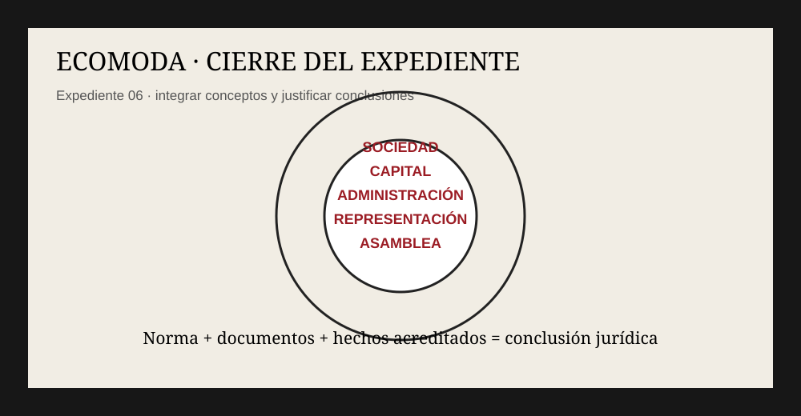

Una crisis amenaza a Ecomoda. Betty encuentra documentos sobre capital, administración, representación y asambleas. El equipo deberá resolver los casos aplicando la Ley General de Sociedades Mercantiles mexicana.
La narrativa se inspira en el universo de Yo soy Betty, la fea; los problemas jurídicos son una adaptación educativa al contexto mexicano.
CASO 1 · La sala de juntas
Betty encuentra la carpeta “Estructura societaria”. Debe identificar la forma societaria y los datos que jurídicamente deben documentarse.
EVIDENCIA EN LIBRETA
Dibuja un organigrama de Ecomoda con accionistas, asamblea, administración, representación y área ejecutiva. Escribe una función de cada elemento.

CASO 2 · ¿Quién puede decidir?
Marcela cuestiona una decisión de Armando. El expediente mezcla accionista, administrador y representante. Comprueben quién puede actuar por la sociedad.
EVIDENCIA EN LIBRETA
Haz tres recuadros: ACCIONISTA, ADMINISTRADOR y REPRESENTANTE. Define cada figura y crea una escena ficticia de Ecomoda para cada una.

CASO 3 · El capital de Ecomoda
Betty encuentra aportaciones y debe distinguir la sociedad anónima de la sociedad de responsabilidad limitada.
EVIDENCIA EN LIBRETA
Dibuja dos estructuras: S.A. y S. de R.L. Representa la participación de sus integrantes y escribe una diferencia.

CASO 4 · La asamblea
Una reunión de socios debe quedar jurídicamente documentada. El expediente también contempla medios electrónicos.
EVIDENCIA EN LIBRETA
Redacta una convocatoria ficticia de Ecomoda y dibuja: convocatoria → deliberación → votación → evidencia.

CASO 5 · La operación que no debía ocultarse
Betty descubre que alguien pretende “arreglar” informes. No se puede concluir una conducta ilícita solo por sospechas.
EVIDENCIA EN LIBRETA
Escribe máximo 10 líneas: “Lo que Betty debería comprobar antes de firmar”. Incluye documento, facultades, operación y evidencia.

CASO 6 · La verdad detrás del escritorio
El equipo ya reunió estructura, capital, representación y asamblea. Ahora debe cerrar el expediente.
EVIDENCIA EN LIBRETA
Dibuja una portada titulada “Ecomoda: sociedad y responsabilidad”. Incluye cinco conceptos y una frase sobre por qué conocer la LGSM cambia la lectura de los conflictos empresariales.

Expediente cerrado
En Ecomoda, la apariencia puede dominar la narrativa; en el análisis jurídico, la estructura, las facultades y la evidencia deben sostener las conclusiones.
CLAVE DE FINALIZACIÓN ECOMODA-LGSM-26
Muéstrala al docente.
PANEL DEL DOCENTE
Acceso exclusivo para el docente de este escape room.
Clave de acceso: ROMERO17. Este panel corresponde únicamente a Ecomoda y no comparte respuestas con el Escape Room Romero.
CASO 01 · Respuestas
1. A — S.A. de C.V. 2. A — Distinta de la de sus socios. 3. A — El objeto social establecido en el contrato constitutivo y estatutos. 4. Abierta: mínimo 2 coincidencias del banco ampliado de palabras y sinónimos.
CASO 02 · Respuestas
1. A — Su administrador o administradores, conforme a la ley y el contrato social. 2. A — Sus facultades de representación y documentos. 3. A — Las facultades deben derivar de la ley, el contrato social o un poder aplicable. 4. Abierta: mínimo 2 coincidencias del banco ampliado de palabras y sinónimos.
CASO 03 · Respuestas
1. A — Acciones. 2. A — S. de R.L. 3. A — En una S. de R.L. la participación se representa mediante partes sociales, no acciones. 4. Abierta: mínimo 2 coincidencias del banco ampliado de palabras y sinónimos.
CASO 04 · Respuestas
1. A — Participación simultánea e interacción funcionalmente equivalente. 2. A — Identidad y, en su caso, sentido del voto, generando evidencia. 3. A — La convocatoria, instalación, deliberación y votación deben quedar documentadas conforme al régimen aplicable. 4. Abierta: mínimo 2 coincidencias del banco ampliado de palabras y sinónimos.
CASO 05 · Respuestas
1. A — Sí, salvo lo prohibido por leyes y estatutos. 2. A — No; requiere contexto, documentos y elementos de prueba. 3. A — Debe verificarse que quien firma tenga facultades suficientes para el acto concreto. 4. Abierta: mínimo 2 coincidencias del banco ampliado de palabras y sinónimos.
CASO 06 · Respuestas
1. A — Sociedad, capital, administración, representación y asamblea. 2. A — Analizar documento, norma y contexto. 3. A — Las conclusiones deben apoyarse en la norma aplicable y en los documentos y hechos acreditados. 4. Abierta: mínimo 2 coincidencias del banco ampliado de palabras y sinónimos.